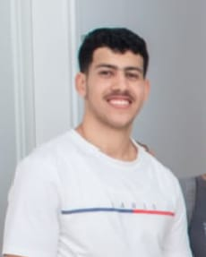

01 · The hook
What if a smartwatch could recognize a medical emergency before anyone realizes something is wrong?
- A patient is alone at home.
- Their vital signs begin to change.
- Nobody notices, until it is serious.
02 · The problem and our solution
Danger is detected too late.
- Health deterioration is detected late.
- Continuous monitoring is hard at home.
- Doctors cannot watch every patient by hand.
We turn passive vital-sign monitoring into intelligent health-risk detection.
Tech4Health · Prevention and early detection03 · The patient experience
A watch that learns your normal.
Tap a vital sign to see which component measures it.
A personal baseline is calibrated at the start, instead of relying only on universal thresholds. Drag the watch to rotate it, scroll over it to zoom.
04 · The complete technical pipeline
One heartbeat, from wrist to doctor.
Measurements and analysis results are stored in SQLite (readings, events, alerts).
05 · The intelligence · main technical highlight
Not “is the heart rate high?” but “is it unusual for this patient?”
Random Forest · Detection
Classifies the current state as Normal, Monitor or Emergency. Learns relations between several vital signs, so it separates a high rate at rest from the same rate during exercise.
Gradient Boosting · Prediction
Reads trends over time and estimates the probability of an emergency in the next 15 minutes. An early-warning signal, not a guaranteed prediction.
Feature engineering
Same HR 140 bpm, illustrative:
06 · Model performance and validation
Real results from our training report.
Emergency recall by method
Split by patient: test patients were never used for training. Synthetic data: this shows technical feasibility, not clinical performance. The forecast (recall 58.9%, precision 22.4%) is an extra early-warning signal, not a diagnosis.
07 · The doctor interface
Understandable information, not raw numbers.
- Patient list and current status
- Live monitoring dashboard
- Vital signs against personal baselines
- Detected episodes and explanations
- Alert history
- Access limited to assigned patients
08 · Patient interface and intelligent alerts
Four levels, one clear action each.
Monitoring continues. Keep wearing your watch.
| Normal | Continue monitoring |
| Rest | Recommend rest |
| Consultation | Contact the doctor |
| Emergency | Trigger the emergency alert workflow |
Click a level: the phone and the 3D watch react. Watch notification and hospital alert are simulated (mock_sent), not real delivery. The current frontend is a shared dashboard; this patient screen is a proposal.
09 · Live demo: from measurement to decision
One complete scenario.
Why the model flagged it
Events and alerts
Scripted replay of a synthetic scenario, so the pitch never depends on hardware or internet. The real application runs with python app.py.
10 · Market, impact and closing
Built to help doctors act earlier.
Target market
- Hospitals and clinics
- Home healthcare providers
- Elderly people living independently
- Patients needing continuous monitoring
- Remote and underserved communities
Positioning
Traditional: often fixed thresholds.
Consumer watches: personal tracking.
Us: personal baselines, multi-signal ML, 15-minute forecast, doctor-oriented workflow.
Next steps
- Real smartwatch integration
- Clinical validation on real data
- Real SMS and emergency links
- Privacy and regulatory compliance
Our goal is not to replace doctors. It is to help them notice what they might miss, and act earlier when every minute matters.
